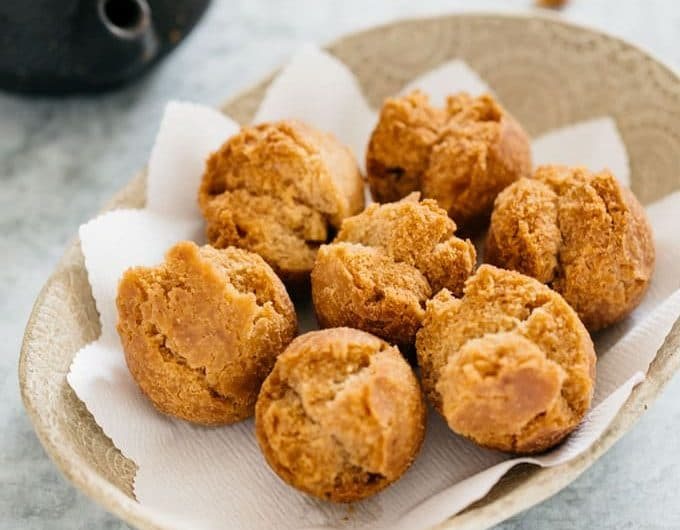
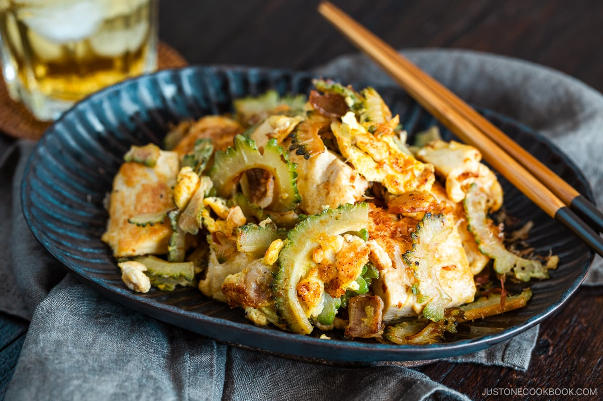
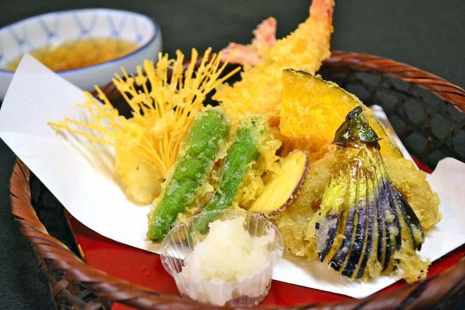
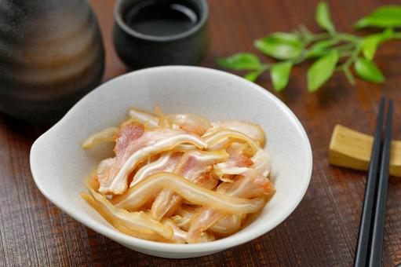
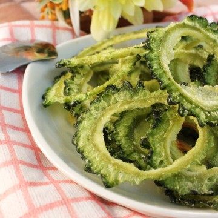
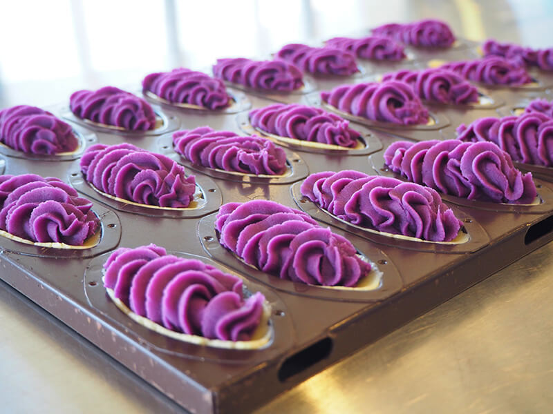
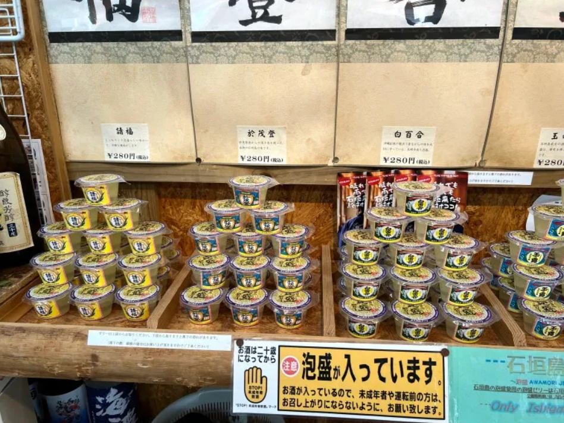
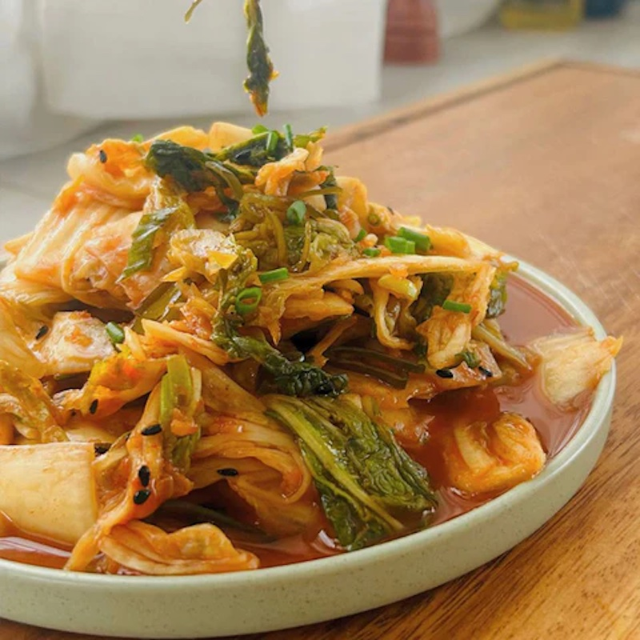

黑糖糕
沖繩最具代表性的甜點之一，用黑糖、麵粉和雞蛋製成，外脆內軟，口感香甜。這種小吃在沖繩的傳統節日和慶典中經常出現，也是遊客喜愛的街頭小吃。

海葡萄
一種生長在沖繩海域的海藻，因其外形像葡萄而得名。它口感清脆，帶有淡淡的鹹味，通常作為沙拉或小吃食用。海葡萄富含礦物質和維生素，是健康的當地小吃。

苦瓜炒蛋
沖繩的一道傳統家常菜，也是常見的小吃。這道菜是用苦瓜、豆腐、雞蛋和豬肉一起炒製而成。苦瓜的微苦味與其他食材的香味相互平衡，是一道營養豐富的健康小吃。

天婦羅
沖繩的天婦羅與日本本土的有所不同，更加簡單和家常。常見的沖繩天婦羅包括魚、蝦、紫蘇葉和各種蔬菜，裹上麵糊後油炸至金黃酥脆。它們通常被作為小吃在街頭攤販和市場中售賣。

豬耳朵
一種獨特的沖繩小吃，常常作為開胃菜或下酒菜食用。豬耳朵經過清燉後切片，與醋和鹽混合調味，口感脆爽，帶有淡淡的鹹味和酸味。這道小吃非常受當地人的喜愛。

苦瓜脆片
一種創新的當地小吃，將苦瓜切片後油炸至脆，然後撒上鹽調味。這種小吃保留了苦瓜的微苦味和營養成分，同時具備酥脆的口感，是一款健康的零食。

紫芋糕
用當地出產的紫芋製作的甜點。紫芋富含抗氧化劑和維生素，顏色鮮豔，口感綿密細膩。紫芋糕通常被製作成塔狀，外觀美麗，味道香甜，是受遊客喜愛的伴手禮。

泡盛果凍
一種結合了沖繩當地烈酒泡盛的創意甜點。這種果凍通常加入水果如橙子或葡萄，口感彈牙，帶有淡淡的酒香。泡盛果凍在炎熱的夏天特別受歡迎，是解暑的小吃。

沖繩泡菜
一種結合了沖繩當地食材和韓國泡菜風味的小吃。它使用當地的新鮮蔬菜，如白菜和蘿蔔，經過發酵和調味後製成。沖繩泡菜酸辣可口，是下飯和下酒的好選擇。